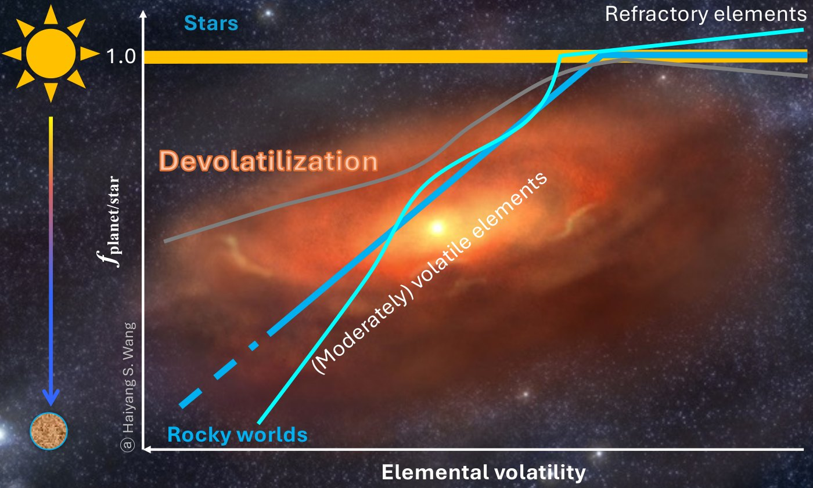
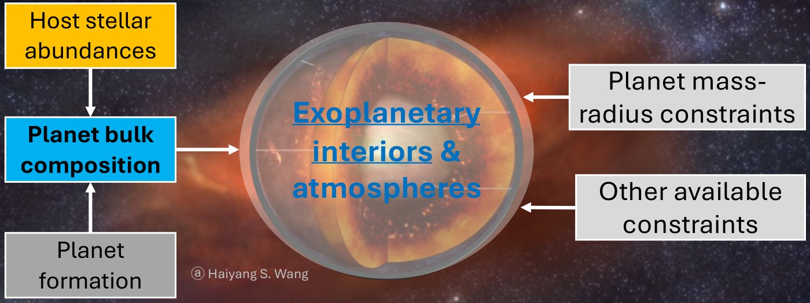
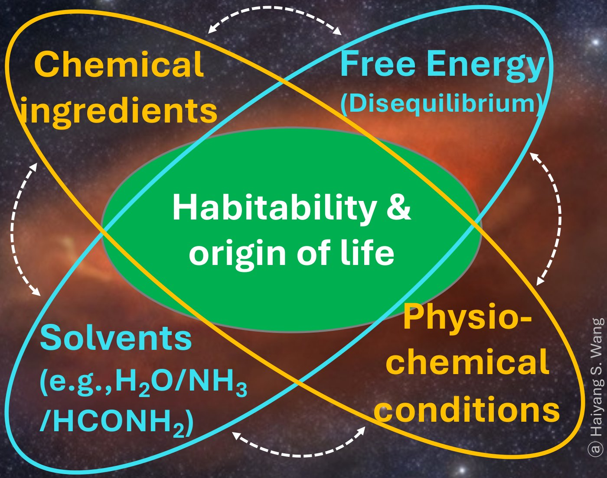

Star–planet chemical connection
Volatile depletion and chemical fractionation

Assistant Professor of Planetary Science · Globe Institute, University of Copenhagen
Drawing on training in astrophysics and geoscience, I study how planetary systems form and evolve, and what shapes the diversity and potential habitability of rocky worlds.
Latest result · 2026
Neither planet formed through a single pathway. The bulk silicate Earth requires a dominant contribution from two pebble-grown protoplanetary bodies, whereas Mars formed mainly via planetesimal accretion. Volatile depletion is the chemical fingerprint of this hybrid accretion.

Volatile depletion and chemical fractionation

Observation-constrained theoretical modelling

Are we alone?
Assistant Professor of Planetary Science
Centre for Star and Planet Formation, Globe Institute
University of Copenhagen, Denmark
UCPH profile · ORCID · Google Scholar · GitHub · LinkedIn
Feel free to write to me through the form if you have a question.